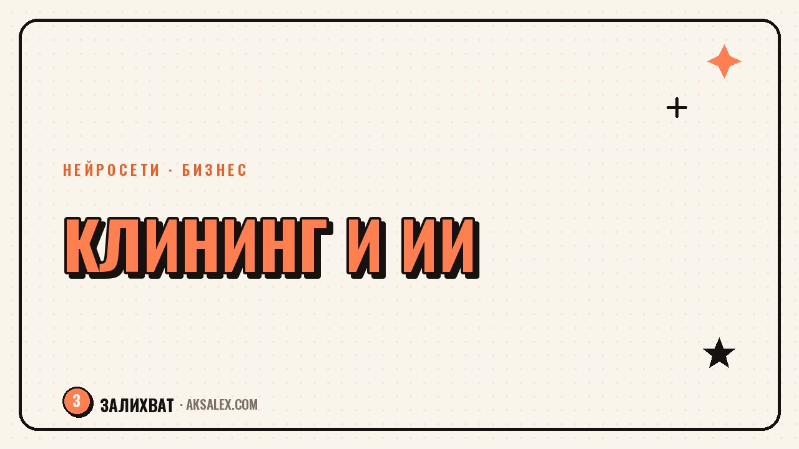

Нейросети для клининга: заявки и график без хаоса

Клининговый бизнес живёт на телефоне и в блокноте: заявка пришла в директ, вторая - по телефону, третья - через форму на сайте, а бригада узнаёт про вызов за час до выезда. Нейросети для клининга не заменят человека со шваброй, но снимут рутину вокруг заказа: ответят клиенту ночью, составят смету и разберут график на неделю.
Зачем клинингу вообще нейросети
Основная боль в клининге - не качество уборки, а организация потока заказов. Пока ты моешь окна у одного клиента, второй звонит и не может дождаться ответа, третий пишет в директе и уходит к конкуренту, который ответил быстрее. Нейросеть не устаёт и не спит, поэтому её логично поставить на эти узкие места: первый контакт, расчёт стоимости, напоминания и сбор отзывов.
Второй момент - цена ошибки в графике. Если две бригады назначены на один адрес, а третий клиент остался без уборки, компания теряет деньги и репутацию в районе, где все друг друга знают.
Приём заявок: чтобы никто не ушёл к конкуренту
Самый быстрый способ начать - завести чат-бота на основе ChatGPT, GigaChat или YandexGPT для директа и сайта. Бот не придумывает цену сам, его задача - собрать вводные и передать заявку человеку.
Что обязательно спросить в автоответе
- Тип объекта: квартира, офис, после ремонта
- Площадь в метрах или количество комнат
- Есть ли животные, сильные загрязнения, мытьё окон
- Удобная дата и район
- Способ связи для подтверждения
Такой бот экономит время не клиенту, а тебе: вместо десяти однотипных сообщений менеджер получает уже готовую заявку с нужными данными.
График бригад и маршруты по городу
Когда бригад больше одной, расписание в блокноте быстро превращается в хаос. Google Таблицы со встроенным Gemini или обычный ChatGPT, которому ты раз в день присылаешь список заявок текстом, помогают собрать черновой план: какая бригада едет утром в один район, какая - вечером в другой.
Итоговое решение проверяет человек: нейросеть не знает про пробки на конкретной улице, но черновик она собирает за минуту вместо получаса ручной сортировки.
Смета, прайс и документы без лишней писанины
Расчёт стоимости - то, что нейросеть делает надёжно, если ты один раз загрузишь в неё свой прайс и правила: ставка за метр, наценка за животных, доплата за мытьё окон. После этого достаточно описать объект словами - и смета готова.
Клиент не должен ждать смету дольше, чем ему нужно времени, чтобы написать ещё трём клинингам рядом. Если ответ занимает полчаса, вопрос решит не качество уборки, а скорость ответа.
Для типовых документов - договор на разовую уборку, акт выполненных работ, памятка новому сотруднику - удобно держать готовый шаблон в нейросети и подгонять его под конкретный случай.
Отзывы и репутация в районе
В клининге репутация работает локально: соседи читают отзывы на 2ГИС и Яндекс Картах про компанию, которая убирает рядом с их домом. Нейросеть помогает подсказать клиенту текст отзыва и собрать спокойный ответ на негатив.
- Просить отзыв сразу после уборки, пока впечатление свежее
- Отвечать на негатив в течение суток
- Хранить типовые ответы и адаптировать под случай
- Следить за упоминаниями компании в соцсетях района
Какую нейросеть выбрать: сравнение для клининга
Сервисов много, и не все нужны одновременно. Вот что закрывает основные задачи клининговой компании или мастера-одиночки.
| Задача | Что подойдёт | Что умеет | Нюанс |
|---|---|---|---|
| Ответы клиентам | ChatGPT, GigaChat | Чат-бот для директа и сайта | Нужно настроить сценарий вопросов |
| Смета и прайс | ChatGPT с прайсом | Расчёт стоимости по описанию | Проверяй итог вручную первые недели |
| График бригад | Таблицы + Gemini | Черновая группировка заявок | Финальное решение - за человеком |
| Документы | GigaChat, YandexGPT | Договоры, акты, памятки | Храни один проверенный шаблон |
| Отзывы | ChatGPT для черновиков | Тексты ответов на отзывы | Тон подстраивай под свой бренд |
Частые вопросы
С чего начать внедрение нейросетей в клининговый бизнес?
Начни с одного узкого места - чаще всего это первый ответ клиенту. Настрой бота или шаблон ответа в мессенджере и проверь его неделю на реальных заявках.
Может ли нейросеть сама составить расписание для бригад?
Черновик - да, если задать правила: районы, время переездов, нагрузку. Финальное решение всё равно проверяет человек, который знает живые обстоятельства дня.
Не отпугнёт ли клиентов чат-бот вместо живого человека?
Отпугивает не бот, а плохой бот, который повторяет одно и то же. Если бот честно собирает вводные и передаёт сложные случаи человеку, клиенты воспринимают его нормально.
Как нейросеть поможет с отзывами, если их мало?
Она не создаёт отзывы за клиентов, а помогает вовремя попросить обратную связь и быстро ответить на то, что уже написали.
Нужно ли платить за нейросети отдельно для маленькой компании?
Многие задачи закрывают бесплатные версии ChatGPT, GigaChat или YandexGPT. Платная подписка нужна, когда поток заявок вырастает и ручная обработка каждого диалога начинает съедать время.
Раз тема оказалась полезной, вот что почитать следующим. Как продавцу Wildberries или Ozon завести блог в соцсетях и привлекать покупателей с помощью нейросетей.
Читать статью →а не вручную